CODING AGENTS AS PIXEL WORLD MODELS
traex/GPT-6.1-Sol · 0008
点击播放 · 原生 RGB 像素
逐轮保存的候选
回放视频、检查图与代码变化。
每份候选均可单独播放。实际图片检查记录在下方工具轨迹中。
候选 01播放与检查图
点击播放 · 原生 RGB 像素
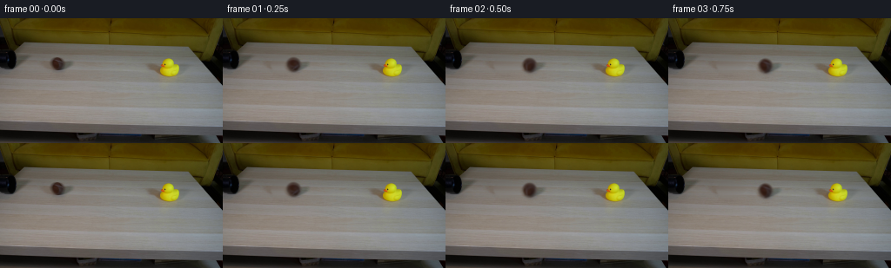
展开代码变化
--- 上一保存版本
+++ 本次保存版本
@@ -0,0 +1,147 @@
+from pathlib import Path
+import numpy as np
+from PIL import Image
+import cv2
+from scipy.ndimage import gaussian_filter
+from artifact_io import save
+
+ROOT = Path(__file__).resolve().parent
+W,H=256,144
+src=np.asarray(Image.open(ROOT/'first_frame.png').convert('RGB')).astype(np.float32)
+yy,xx=np.mgrid[:H,:W].astype(np.float32)
+
+# Reconstruct the continuous, horizontal wood grain under the two objects.
+def fill_rows(image, x1,x2,y1,y2,left,right):
+ pred=image.copy()
+ for y in range(y1,y2):
+ lv=np.median(image[y,left[0]:left[1]],axis=0)
+ rv=np.median(image[y,right[0]:right[1]],axis=0)
+ u=(np.arange(x1,x2)-(left[0]+left[1])/2)/((right[0]+right[1]-left[0]-left[1])/2)
+ line=lv[None]*(1-u[:,None])+rv[None]*u[:,None]
+ # Small variations copied from another unobstructed part of the same plank.
+ row=image[y,109:109+(x2-x1)]
+ detail=row-gaussian_filter(row,(2.5,0))
+ pred[y,x1:x2]=line+detail*.38
+ return pred
+
+ball_fill=fill_rows(src,45,94,39,68,(43,53),(89,102))
+duck_fill=fill_rows(src,159,218,40,77,(144,162),(211,230))
+ball_support=np.zeros((H,W),np.float32)
+cv2.ellipse(ball_support,(67,53),(12,11),0,0,360,1,-1)
+cv2.ellipse(ball_support,(77,54),(12,7),-15,0,360,1,-1)
+ball_support=gaussian_filter(ball_support,.9)
+duck_support=np.zeros((H,W),np.float32)
+poly=np.array([[161,52],[176,50],[180,48],[186,45],[197,43],[202,47],[204,51],[209,52],[210,63],[206,69],[197,72],[183,70],[172,62],[162,58]],np.int32)
+cv2.fillPoly(duck_support,[poly],1)
+duck_support=gaussian_filter(duck_support,1.)
+background_ball=src*(1-ball_support[...,None])+ball_fill*ball_support[...,None]
+background=background_ball*(1-duck_support[...,None])+duck_fill*duck_support[...,None]
+
+# Recover soft silhouettes and colors from the photograph, rather than replace
+# the small props with sharply rendered graphics.
+chroma=np.maximum(src[...,0]-src[...,2],src[...,1]-src[...,2])
+bg_chroma=np.maximum(duck_fill[...,0]-duck_fill[...,2],duck_fill[...,1]-duck_fill[...,2])
+duck_alpha=np.clip((chroma-bg_chroma)/137.,0,1)
+duck_alpha*=((xx>=180)&(xx<=210)&(yy>=43)&(yy<=70))
+# The black eye lies inside the head silhouette.
+cv2.circle(duck_alpha,(189,53),1.8 if False else 2,1,-1)
+# Fade away the negligible wood-color residual in the outer fringe.
+duck_alpha[duck_alpha<.025]=0
+fg_duck=(src-duck_fill*(1-duck_alpha[...,None]))/np.maximum(duck_alpha[...,None],.025)
+fg_duck=np.clip(fg_duck,0,255)
+# Source shadow contains the authentic soft warm cast on the left of the duck.
+duck_shadow=(src-background)*duck_support[...,None]*(1-duck_alpha[...,None])
+duck_shadow=np.minimum(duck_shadow,0)
+
+cx,cy=65.6,52.3
+rx,ry=7.25,7.7
+r=np.sqrt(((xx-cx)/rx)**2+((yy-cy)/ry)**2)
+ball_alpha=np.clip((1.23-r)/.28,0,1)
+ball_alpha=gaussian_filter(ball_alpha,.27)
+fg_ball=(src-ball_fill*(1-ball_alpha[...,None]))/np.maximum(ball_alpha[...,None],.05)
+fg_ball=np.clip(fg_ball,0,255)
+# Fill the outside of the extracted disc by the nearest interior color so
+# interpolation cannot bring a pale table edge into the ball.
+valid=(r<.97).astype(np.uint8)
+_,indices=cv2.distanceTransformWithLabels(1-valid,cv2.DIST_L2,5,labelType=cv2.DIST_LABEL_PIXEL)
+points=np.argwhere(valid>0)
+nearest=points[np.maximum(indices-1,0)]
+outer=r>.97
+fg_ball[outer]=fg_ball[nearest[...,0][outer],nearest[...,1][outer]]
+ball_shading=gaussian_filter(fg_ball,(2.8,2.8,0))
+ball_detail=(fg_ball-ball_shading)*ball_alpha[...,None]
+ball_shadow=(src-background_ball)*(1-ball_alpha[...,None])*ball_support[...,None]
+ball_shadow=np.minimum(ball_shadow,0)
+
+
+def warp(a,mat):
+ return cv2.warpAffine(a.astype(np.float32),mat,(W,H),flags=cv2.INTER_LINEAR,borderMode=cv2.BORDER_CONSTANT,borderValue=0)
+
+def translation(x,y):
+ return np.float32([[1,0,x],[0,1,y]])
+
+def matte(dst,fg,alpha):
+ return dst*(1-alpha[...,None])+fg*alpha[...,None]
+
+# A roll out of the pipe is already in progress in the supplied first exposure.
+# The ball follows a straight line in the tabletop's perspective.
+v0=62.0
+roll_drag=3.0
+impact_x=176.8
+impact_time=(v0-np.sqrt(v0*v0-2*roll_drag*(impact_x-cx)))/roll_drag
+
+def motion(t):
+ if t<impact_time:
+ dx=v0*t-.5*roll_drag*t*t
+ return cx+dx, 0., 0.
+ s=t-impact_time
+ # One dimensional impact transfers momentum to the lighter rubber toy;
+ # sliding friction then brings both props to rest on the tabletop.
+ sb=min(s,25.0/12.0)
+ sd=min(s,38.0/20.0)
+ bx=impact_x+25.*sb-6.*sb*sb
+ dd=38.*sd-10.*sd*sd
+ # A small damped rock around the broad base, with no sustained flight.
+ tilt=25.*np.exp(-3.6*s)*np.sin(8.5*s)
+ return bx,dd,tilt
+
+
+def render(t):
+ bx,dd,tilt=motion(max(t,0))
+ by=cy+(bx-cx)*.051
+ hit=t>=impact_time
+ image=(background if hit else background_ball).copy()
+ # The photographed duck remains untouched until actual contact.
+ if hit:
+ sh=warp(duck_shadow,translation(dd,dd*.051))
+ image=np.clip(image+sh,0,255)
+ # Clockwise lean is measured around the point of contact with the wood.
+ mat=cv2.getRotationMatrix2D((194.5,66.5),-tilt,1.)
+ mat[:,2]+=np.array([dd,dd*.051])
+ da=warp(duck_alpha,mat)
+ premul=warp(fg_duck*duck_alpha[...,None],mat)
+ image=image*(1-da[...,None])+premul
+ # Soft cast shadow stays attached to the rolling ball.
+ bs=warp(ball_shadow,translation(bx-cx,by-cy))
+ image=np.clip(image+bs,0,255)
+ angle=-(bx-cx)/rx*180/np.pi
+ rot=cv2.getRotationMatrix2D((cx,cy),angle,1.)
+ detail=warp(ball_detail,rot)
+ ball_color=np.clip(ball_shading+detail,0,255)
+ mat=translation(bx-cx,by-cy)
+ ba=warp(ball_alpha,mat)
+ bp=warp(ball_color*ball_alpha[...,None],mat)
+ image=image*(1-ba[...,None])+bp
+ return np.clip(image,0,255)
+
+frames=[src.astype(np.uint8)]
+for i in range(1,20):
+ t=i/4.
+ # Short, constant shutter exposure: slight blur, not inter-frame dissolves.
+ exposures=[render(t+offset) for offset in (-.011,0,.011)]
+ frames.append(np.rint(np.mean(exposures,axis=0)).astype(np.uint8))
+frames=np.stack(frames)
+save(frames,ROOT)
+Image.fromarray(background.astype(np.uint8)).save(ROOT/'.tmp'/'background.png')
+Image.fromarray(np.uint8(np.clip(duck_alpha*255,0,255))).save(ROOT/'.tmp'/'duck_alpha.png')
+print(f'Generated {frames.shape}; impact at {impact_time:.3f}s')
候选 02播放与检查图
点击播放 · 原生 RGB 像素
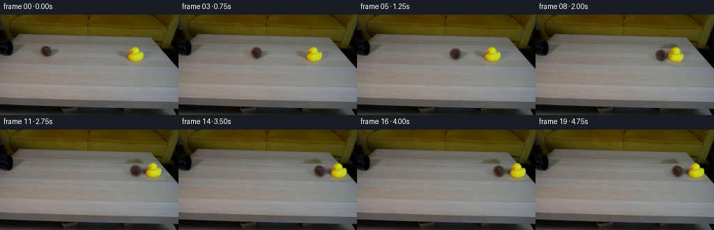
展开代码变化
--- 上一保存版本
+++ 本次保存版本
@@ -24,14 +24,15 @@
pred[y,x1:x2]=line+detail*.38
return pred
-ball_fill=fill_rows(src,45,94,39,68,(43,53),(89,102))
-duck_fill=fill_rows(src,159,218,40,77,(144,162),(211,230))
+ball_fill=fill_rows(src,39,101,38,71,(38,45),(94,105))
+duck_fill=fill_rows(src,154,225,38,79,(144,161),(223,237))
ball_support=np.zeros((H,W),np.float32)
-cv2.ellipse(ball_support,(67,53),(12,11),0,0,360,1,-1)
-cv2.ellipse(ball_support,(77,54),(12,7),-15,0,360,1,-1)
-ball_support=gaussian_filter(ball_support,.9)
+cv2.ellipse(ball_support,(67,53),(18,12),0,0,360,1,-1)
+cv2.ellipse(ball_support,(62,53),(17,9),0,0,360,1,-1)
+cv2.ellipse(ball_support,(77,54),(15,8),-15,0,360,1,-1)
+ball_support=gaussian_filter(ball_support,1.2)
duck_support=np.zeros((H,W),np.float32)
-poly=np.array([[161,52],[176,50],[180,48],[186,45],[197,43],[202,47],[204,51],[209,52],[210,63],[206,69],[197,72],[183,70],[172,62],[162,58]],np.int32)
+poly=np.array([[160,49],[177,48],[183,43],[199,42],[204,46],[206,50],[218,51],[221,64],[214,72],[199,75],[181,72],[170,65],[160,60]],np.int32)
cv2.fillPoly(duck_support,[poly],1)
duck_support=gaussian_filter(duck_support,1.)
background_ball=src*(1-ball_support[...,None])+ball_fill*ball_support[...,None]
@@ -44,7 +45,7 @@
duck_alpha=np.clip((chroma-bg_chroma)/137.,0,1)
duck_alpha*=((xx>=180)&(xx<=210)&(yy>=43)&(yy<=70))
# The black eye lies inside the head silhouette.
-cv2.circle(duck_alpha,(189,53),1.8 if False else 2,1,-1)
+cv2.circle(duck_alpha,(189,53),2,1,-1)
# Fade away the negligible wood-color residual in the outer fringe.
duck_alpha[duck_alpha<.025]=0
fg_duck=(src-duck_fill*(1-duck_alpha[...,None]))/np.maximum(duck_alpha[...,None],.025)
候选 03播放与检查图
点击播放 · 原生 RGB 像素
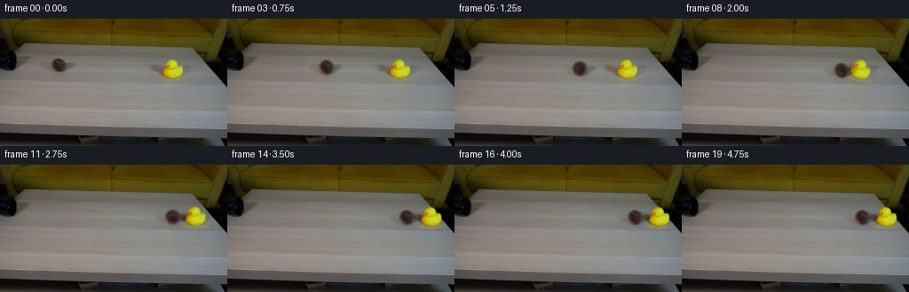
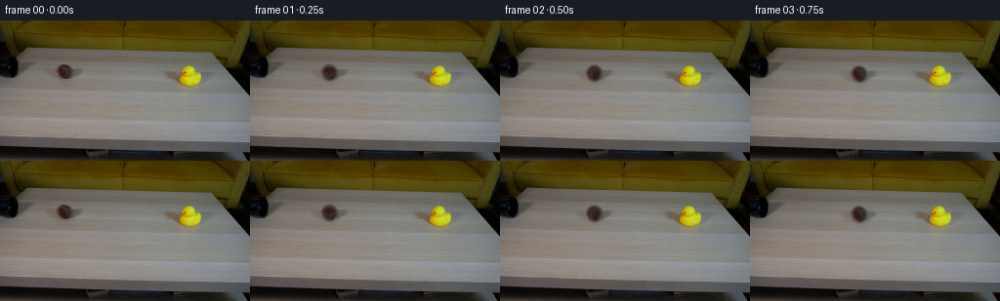
展开代码变化
--- 上一保存版本
+++ 本次保存版本
@@ -11,9 +11,12 @@
yy,xx=np.mgrid[:H,:W].astype(np.float32)
# Reconstruct the continuous, horizontal wood grain under the two objects.
-def fill_rows(image, x1,x2,y1,y2,left,right):
+def fill_rows(image, x1,x2,y1,y2,left,right,table_edge=False):
pred=image.copy()
for y in range(y1,y2):
+ if table_edge:
+ end=min(250,int(214+(y-33)*.9-3))
+ right=(end-9,end)
lv=np.median(image[y,left[0]:left[1]],axis=0)
rv=np.median(image[y,right[0]:right[1]],axis=0)
u=(np.arange(x1,x2)-(left[0]+left[1])/2)/((right[0]+right[1]-left[0]-left[1])/2)
@@ -25,7 +28,7 @@
return pred
ball_fill=fill_rows(src,39,101,38,71,(38,45),(94,105))
-duck_fill=fill_rows(src,154,225,38,79,(144,161),(223,237))
+duck_fill=fill_rows(src,154,225,38,79,(144,161),(223,237),table_edge=True)
ball_support=np.zeros((H,W),np.float32)
cv2.ellipse(ball_support,(67,53),(18,12),0,0,360,1,-1)
cv2.ellipse(ball_support,(62,53),(17,9),0,0,360,1,-1)
可观测工具轨迹
实际执行的命令与返回图片。
命令 1exit 0
/bin/bash -lc "ls -la && cat prompt.txt && printf '\\n--- RULES ---\\n' && cat GENERATION_RULES.md"
命令 2exit 0
/bin/bash -lc "cat artifact_io.py && python - <<'PY'
from PIL import Image
im=Image.open('first_frame.png'); print(im.size); im.resize((1024,576)).save('.tmp/first_large.png')
PY"命令 3exit 0
/bin/bash -lc "python - <<'PY'
import PIL, scipy, numpy
from PIL import Image
im=Image.open('first_frame.png')
im.crop((45,36,87,72)).resize((630,540)).save('.tmp/ball_crop.png')
im.crop((162,35,217,78)).resize((660,516)).save('.tmp/duck_crop.png')
PY"命令 4exit 0
/bin/bash -lc "python - <<'PY'
import importlib.util
print('cv2',importlib.util.find_spec('cv2'))
from PIL import Image
im=Image.open('first_frame.png')
im.resize((1536,864),Image.Resampling.NEAREST).save('.tmp/first_nn.png')
PY"命令 5exit 0
/bin/bash -lc "python - <<'PY'
from PIL import Image
import numpy as np
im=np.array(Image.open('first_frame.png'))
for y in range(43,62,2):
print(y,[(x,im[y,x].tolist()) for x in range(59,75,3)])
PY"命令 6exit 0
/bin/bash -lc "python - <<'PY'
from PIL import Image
import numpy as np
im=np.array(Image.open('first_frame.png')); im[42:73,176:211].repeat(16,axis=0).repeat(16,axis=1)
Image.fromarray(im[42:73,176:211].repeat(16,axis=0).repeat(16,axis=1)).save('.tmp/duck_nn.png')
PY"命令 7exit 0
/bin/bash -lc "python - <<'PY'
from PIL import Image
import numpy as np
im=np.array(Image.open('first_frame.png')).astype(float)
for y in range(44,70):
vals=[]
for x in range(180,209):
c=max(im[y,x,0]-im[y,x,2],im[y,x,1]-im[y,x,2]); vals.append('X' if c>140 else 'o' if c>90 else '+' if c>45 else '.' if c>20 else ' ')
print(y,''.join(vals))
PY"命令 8exit 0
/bin/bash -lc "python - <<'PY'
from PIL import Image
import numpy as np
im=np.array(Image.open('first_frame.png')).astype(float)
for y in range(45,69):
c=np.maximum(im[y,:,0]-im[y,:,2],im[y,:,1]-im[y,:,2]); inds=np.flatnonzero(c[175:215]>60)+175
print(y, (min(inds),max(inds)) if len(inds) else '-')
PY"命令 9exit 0
/bin/bash -lc "cat > generate.py <<'PY'
from pathlib import Path
import numpy as np
from PIL import Image
import cv2
from scipy.ndimage import gaussian_filter
from artifact_io import save
ROOT = Path(__file__).resolve().parent
W,H=256,144
src=np.asarray(Image.open(ROOT/'first_frame.png').convert('RGB')).astype(np.float32)
yy,xx=np.mgrid[:H,:W].astype(np.float32)
# Reconstruct the continuous, horizontal wood grain under the two objects.
def fill_rows(image, x1,x2,y1,y2,left,right):
pred=image.copy()
for y in range(y1,y2):
lv=np.median(image[y,left[0]:left[1]],axis=0)
rv=np.median(image[y,right[0]:right[1]],axis=0)
u=(np.arange(x1,x2)-(left[0]+left[1])/2)/((right[0]+right[1]-left[0]-left[1])/2)
line=lv[None]*(1-u[:,None])+rv[None]*u[:,None]
# Small variations copied from another unobstructed part of the same plank.
row=image[y,109:109+(x2-x1)]
detail=row-gaussian_filter(row,(2.5,0))
pred[y,x1:x2]=line+detail*.38
return pred
ball_fill=fill_rows(src,45,94,39,68,(43,53),(89,102))
duck_fill=fill_rows(src,159,218,40,77,(144,162),(211,230))
ball_support=np.zeros((H,W),np.float32)
cv2.ellipse(ball_support,(67,53),(12,11),0,0,360,1,-1)
cv2.ellipse(ball_support,(77,54),(12,7),-15,0,360,1,-1)
ball_support=gaussian_filter(ball_support,.9)
duck_support=np.zeros((H,W),np.float32)
poly=np.array([[161,52],[176,50],[180,48],[186,45],[197,43],[202,47],[204,51],[209,52],[210,63],[206,69],[197,72],[183,70],[172,62],[162,58]],np.int32)
cv2.fillPoly(duck_support,[poly],1)
duck_support=gaussian_filter(duck_support,1.)
background_ball=src*(1-ball_support[...,None])+ball_fill*ball_support[...,None]
background=background_ball*(1-duck_support[...,None])+duck_fill*duck_support[...,None]
# Recover soft silhouettes and colors from the photograph, rather than replace
# the small props with sharply rendered graphics.
chroma=np.maximum(src[...,0]-src[...,2],src[...,1]-src[...,2])
bg_chroma=np.maximum(duck_fill[...,0]-duck_fill[...,2],duck_fill[...,1]-duck_fill[...,2])
duck_alpha=np.clip((chroma-bg_chroma)/137.,0,1)
duck_alpha*=((xx>=180)&(xx<=210)&(yy>=43)&(yy<=70))
# The black eye lies inside the head silhouette.
cv2.circle(duck_alpha,(189,53),1.8 if False else 2,1,-1)
# Fade away the negligible wood-color residual in the outer fringe.
duck_alpha[duck_alpha<.025]=0
fg_duck=(src-duck_fill*(1-duck_alpha[...,None]))/np.maximum(duck_alpha[...,None],.025)
fg_duck=np.clip(fg_duck,0,255)
# Source shadow contains the authentic soft warm cast on the left of the duck.
duck_shadow=(src-background)*duck_support[...,None]*(1-duck_alpha[...,None])
duck_shadow=np.minimum(duck_shadow,0)
cx,cy=65.6,52.3
rx,ry=7.25,7.7
r=np.sqrt(((xx-cx)/rx)**2+((yy-cy)/ry)**2)
ball_alpha=np.clip((1.23-r)/.28,0,1)
ball_alpha=gaussian_filter(ball_alpha,.27)
fg_ball=(src-ball_fill*(1-ball_alpha[...,None]))/np.maximum(ball_alpha[...,None],.05)
fg_ball=np.clip(fg_ball,0,255)
# Fill the outside of the extracted disc by the nearest interior color so
# interpolation cannot bring a pale table edge into the ball.
valid=(r<.97).astype(np.uint8)
_,indices=cv2.distanceTransformWithLabels(1-valid,cv2.DIST_L2,5,labelType=cv2.DIST_LABEL_PIXEL)
points=np.argwhere(valid>0)
nearest=points[np.maximum(indices-1,0)]
outer=r>.97
fg_ball[outer]=fg_ball[nearest[...,0][outer],nearest[...,1][outer]]
ball_shading=gaussian_filter(fg_ball,(2.8,2.8,0))
ball_detail=(fg_ball-ball_shading)*ball_alpha[...,None]
ball_shadow=(src-background_ball)*(1-ball_alpha[...,None])*ball_support[...,None]
ball_shadow=np.minimum(ball_shadow,0)
def warp(a,mat):
return cv2.warpAffine(a.astype(np.float32),mat,(W,H),flags=cv2.INTER_LINEAR,borderMode=cv2.BORDER_CONSTANT,borderValue=0)
def translation(x,y):
return np.float32([[1,0,x],[0,1,y]])
def matte(dst,fg,alpha):
return dst*(1-alpha[...,None])+fg*alpha[...,None]
# A roll out of the pipe is already in progress in the supplied first exposure.
# The ball follows a straight line in the tabletop's perspective.
v0=62.0
roll_drag=3.0
impact_x=176.8
impact_time=(v0-np.sqrt(v0*v0-2*roll_drag*(impact_x-cx)))/roll_drag
def motion(t):
if t<impact_time:
dx=v0*t-.5*roll_drag*t*t
return cx+dx, 0., 0.
s=t-impact_time
# One dimensional impact transfers momentum to the lighter rubber toy;
# sliding friction then brings both props to rest on the tabletop.
sb=min(s,25.0/12.0)
sd=min(s,38.0/20.0)
bx=impact_x+25.*sb-6.*sb*sb
dd=38.*sd-10.*sd*sd
# A small damped rock around the broad base, with no sustained flight.
tilt=25.*np.exp(-3.6*s)*np.sin(8.5*s)
return bx,dd,tilt
def render(t):
bx,dd,tilt=motion(max(t,0))
by=cy+(bx-cx)*.051
hit=t>=impact_time
image=(background if hit else background_ball).copy()
# The photographed duck remains untouched until actual contact.
if hit:
sh=warp(duck_shadow,translation(dd,dd*.051))
image=np.clip(image+sh,0,255)
# Clockwise lean is measured around the point of contact with the wood.
mat=cv2.getRotationMatrix2D((194.5,66.5),-tilt,1.)
mat[:,2]+=np.array([dd,dd*.051])
da=warp(duck_alpha,mat)
premul=warp(fg_duck*duck_alpha[...,None],mat)
image=image*(1-da[...,None])+premul
# Soft cast shadow stays attached to the rolling ball.
bs=warp(ball_shadow,translation(bx-cx,by-cy))
image=np.clip(image+bs,0,255)
angle=-(bx-cx)/rx*180/np.pi
rot=cv2.getRotationMatrix2D((cx,cy),angle,1.)
detail=warp(ball_detail,rot)
ball_color=np.clip(ball_shading+detail,0,255)
mat=translation(bx-cx,by-cy)
ba=warp(ball_alpha,mat)
bp=warp(ball_color*ball_alpha[...,None],mat)
image=image*(1-ba[...,None])+bp
return np.clip(image,0,255)
frames=[src.astype(np.uint8)]
for i in range(1,20):
t=i/4.
# Short, constant shutter exposure: slight blur, not inter-frame dissolves.
exposures=[render(t+offset) for offset in (-.011,0,.011)]
frames.append(np.rint(np.mean(exposures,axis=0)).astype(np.uint8))
frames=np.stack(frames)
save(frames,ROOT)
Image.fromarray(background.astype(np.uint8)).save(ROOT/'.tmp'/'background.png')
Image.fromarray(np.uint8(np.clip(duck_alpha*255,0,255))).save(ROOT/'.tmp'/'duck_alpha.png')
print(f'Generated {frames.shape}; impact at {impact_time:.3f}s')
PY
python generate.py"命令 10exit 0
/bin/bash -lc "python - <<'PY'
from PIL import Image
for n in [1,7,8,9,15,19]:
im=Image.open(f'frames/{n:02}.png'); im.resize((1024,576)).save(f'.tmp/frame{n}.png')
PY"命令 11exit 0
/bin/bash -lc "python - <<'PY'
from PIL import Image
Image.open('.tmp/background.png').resize((1024,576)).save('.tmp/bg_large.png')
PY"命令 12exit 0
/bin/bash -lc "python - <<'PY'
from PIL import Image
import numpy as np
im=np.array(Image.open('first_frame.png'))
for y in [47,50,52,54,56,58,60,65,70]:
print(y,[(x,im[y,x].tolist()) for x in [45,50,53,55,60,85,90,160,165,170,207,210,214,217,220,225]])
PY"命令 13exit 0
/bin/bash -lc "python generate.py && python - <<'PY'
from PIL import Image
Image.open('frames/19.png').resize((1024,576)).save('.tmp/final_large.png')
Image.open('.tmp/background.png').resize((1024,576)).save('.tmp/bg_large2.png')
PY"命令 14exit 0
/bin/bash -lc "python generate.py && python - <<'PY'
from PIL import Image
Image.open('frames/19.png').resize((1024,576)).save('.tmp/final_large.png')
PY"命令 15exit 0
/bin/bash -lc "python - <<'PY'
import numpy as np
from PIL import Image
from pathlib import Path
frames=np.stack([np.array(Image.open(f'frames/{i:02d}.png')) for i in range(20)])
assert frames.shape==(20,144,256,3) and frames.dtype==np.uint8
assert np.array_equal(frames[0],np.array(Image.open('first_frame.png')))
print('Validation passed: 20 RGB frames, 256x144, exact first frame.')
PY
command -v ffmpeg || true"视觉工具实际返回图片 1

视觉工具实际返回图片 2
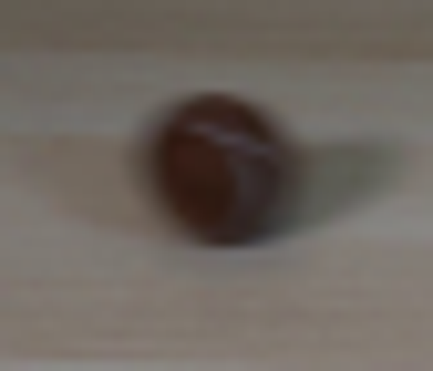
视觉工具实际返回图片 3
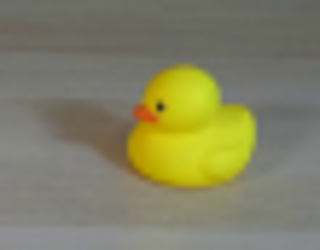
视觉工具实际返回图片 4
视觉工具实际返回图片 5
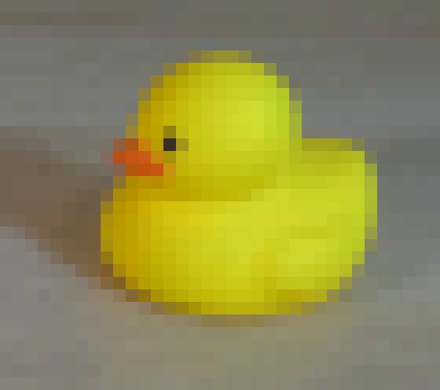
视觉工具实际返回图片 6

视觉工具实际返回图片 7
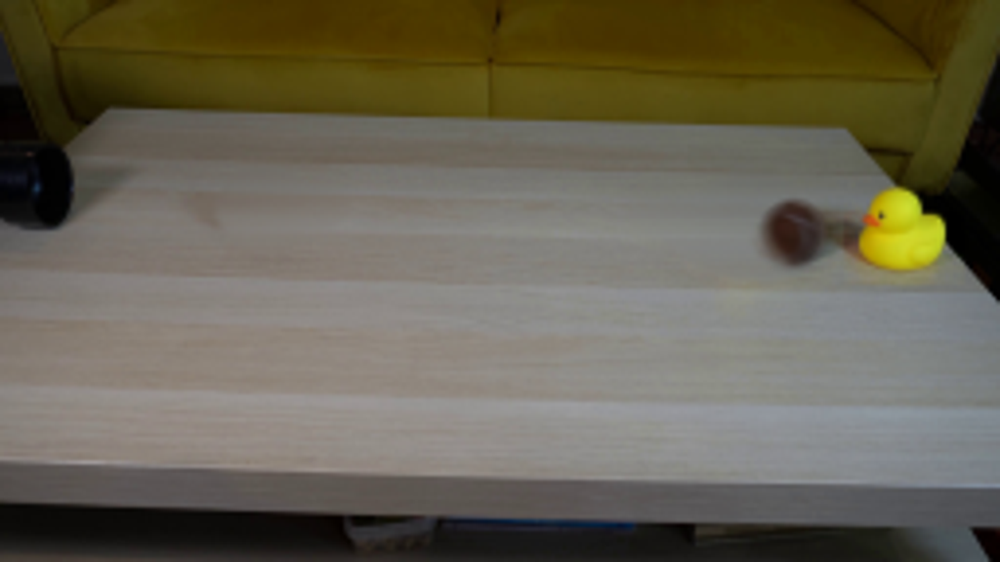
视觉工具实际返回图片 8
视觉工具实际返回图片 9
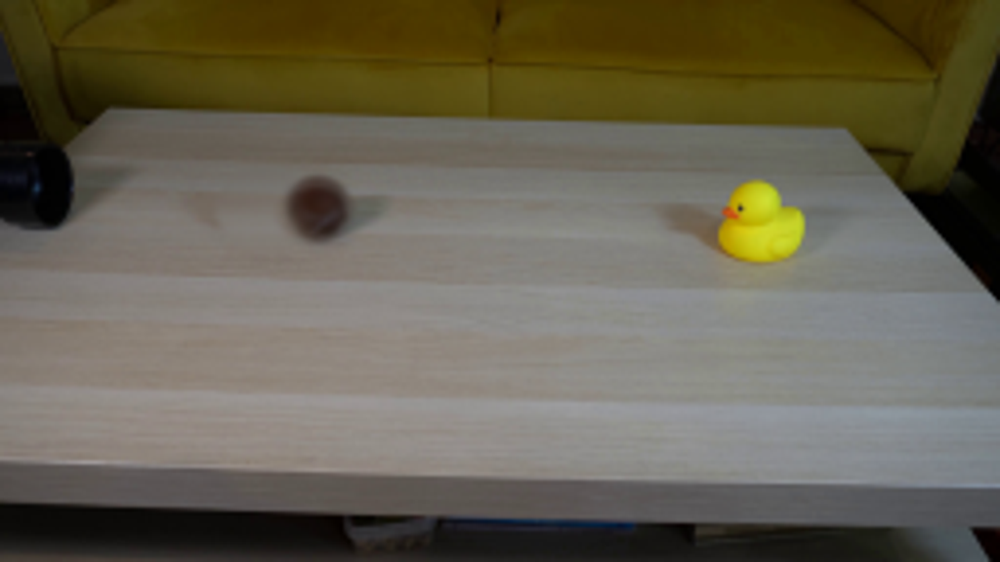
视觉工具实际返回图片 10
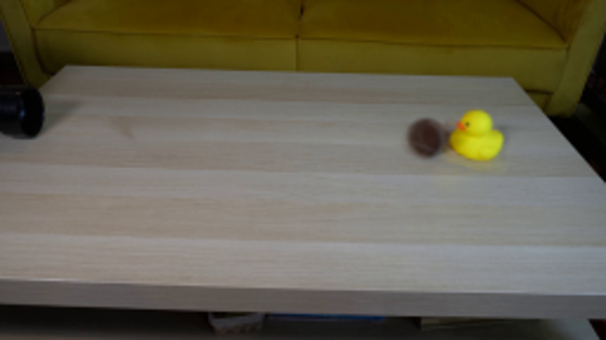
视觉工具实际返回图片 11
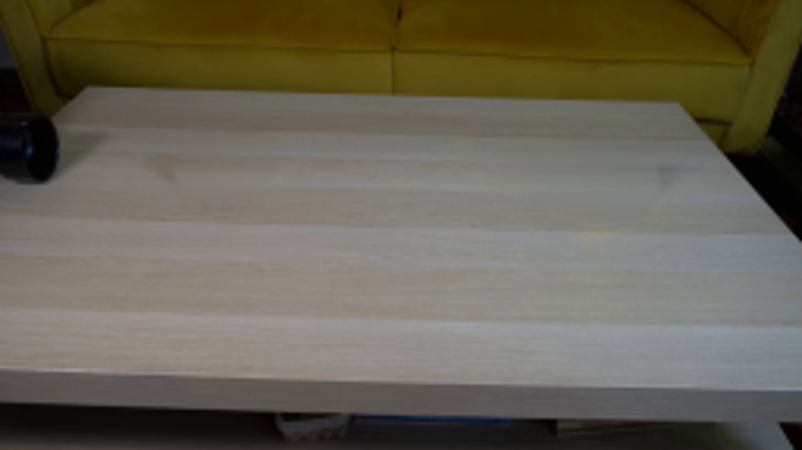
视觉工具实际返回图片 12
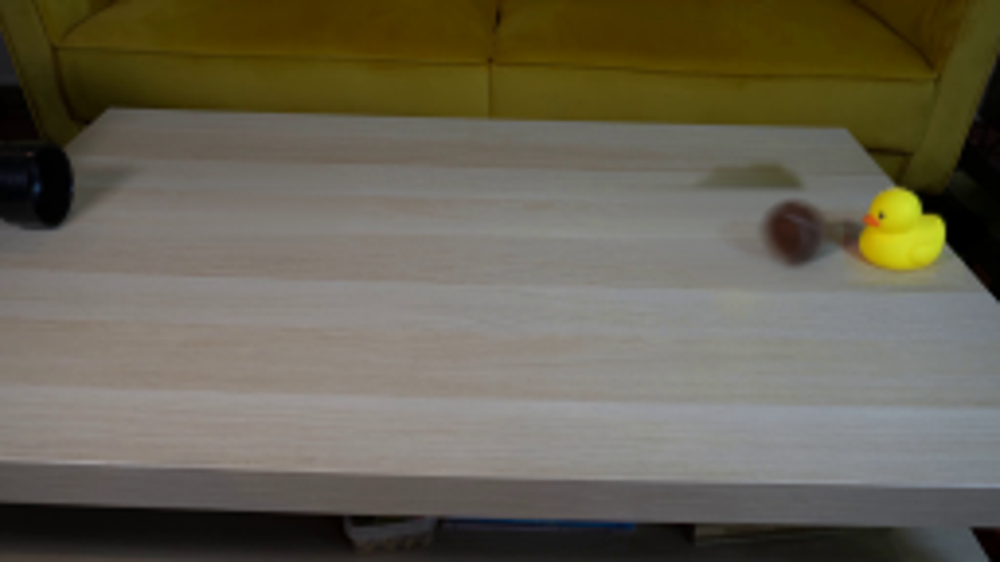
视觉工具实际返回图片 13
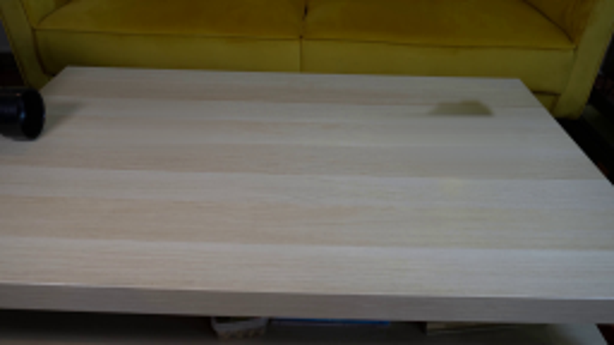
视觉工具实际返回图片 14
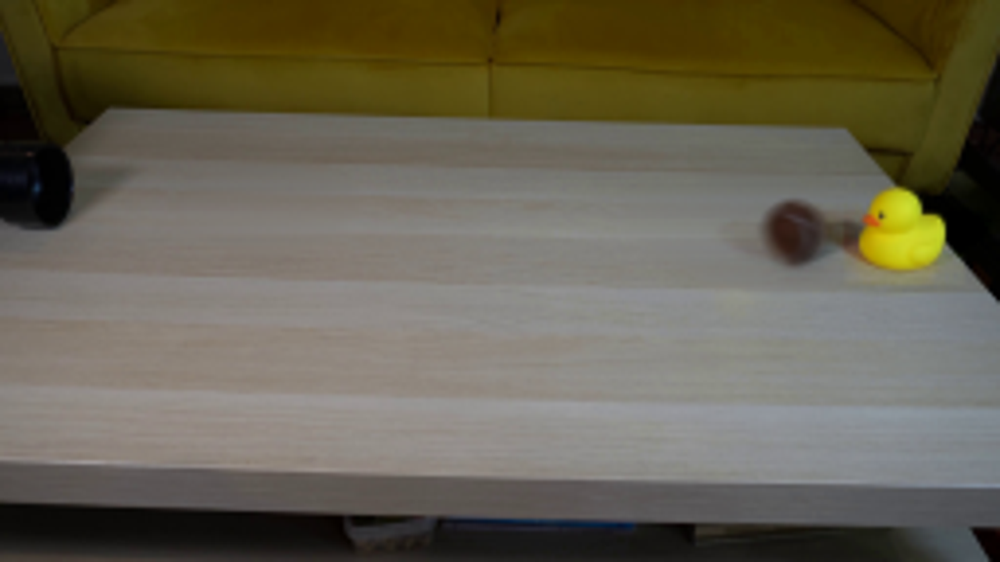
保存候选 3 份；完成命令 15 次；可验证图片返回 14 张。原始 API 响应与完整日志保留在本地。